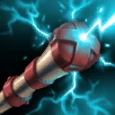

|
| :: Boots :: | ||
|---|---|---|
| Boots (🪙585) 35 Movespeed | ||
 | Power Boots (🪙950) 65 Movespeed 20 Power Activate: 20% penetration for 20s (⏰35s) | |
 | Fervor Boots (🪙1080) 50 Movespeed 25 Attackspeed Activate: +80 Movespeed and Ghost for 3s (⏰13s) | |
 | Inertia Boots (🪙1080) 65 Movespeed 250 Health Activate: remove all stuns/slows and provide 50% stun/slow reduction for 2 seconds (⏰60s) | |
 | Rune Boots (🪙1080) 70 Movespeed 15% cooldown reduction Activate: restore 15% of Max Health and Mana over 3 seconds (⏰45s) (Taking damage removes restoration) | |
 | Warp Boots (🪙1150) 85 Movespeed Activate: Target allied unit or building to teleport there. Upon arriving, gain 80 movespeed for 3 seconds (⏰95s) | |
 | Rocket Boots (🪙1250) 55 Movespeed Activate: dash 525 units (⏰35s) | |
| :: Power :: | ||
 | Fel Blade (Tier 1, 🪙300) 8 Power +5% out of combat Movespeed | Bloodlust (🪙60): On hero kill/assist, increases Power by 4 for 2 minutes. Haste (🪙105): Grants 5 Movement Speed. |
 | Reaper's Scythe (Tier 2, 🪙440) Each kill/assist grants 3 Power and 30 Health. One charge is lost upon death. While at max charges (5), grants a bonus 10 Movement Speed. | Glory (🪙30): Killing Cindara or Baldir will now add a charge. Power (🪙265): Grants 5 Power. Ages (🪙200): Increases max charges by 2. |
 | Cystalline Shiv (Tier 3, 🪙720) Grants up to 20 Power and up to 2 Mana/sec based on how full your health bar is. | Perfection (🪙175): When at full hp, increases Power by 10. Wit (🪙235): Increases bonus Power by 4 and Mana/sec by 0.5. Siphoning 🪙(180): Grants 3% Magic Lifesteal. |
 | Wizard's Hourglass (Tier 8, 🪙1425) 15 Power 25% Cooldown Reduction | Efficiency (🪙280): Each spell cast increases Mana/sec by 3 for 4 seconds. Non-stacking. Siphoning (🪙305): Grants 5% Magic Lifesteal. |
| :: Auto Attack :: | ||
 | Throwing Axe (Tier 1, 🪙280) Increases your attack damage vs. non-hero units by 15% Activate: deal 1.2x attack damage to a non-hero unit (⏰12s) | Prosperity (🪙50): Killing a unit with the throwing axe grants an additional 4 gold. Desolation (🪙100): Deal 10% more damage to non-hero units. The Hunt (🪙100): Killing a unit with the throwing axe heals you for 15 Health. |
 | Demon Fang (Tier 4, 🪙900) +21 Attack damage | Desolation (🪙150): Grants 15% bonus damage to non-hero units. Brutality (🪙355): Increases Attack Damage by 6. |
|  | Thundercaller (Tier 4, 🪙950) Chain lightning for 60 Magic damage every 5 attacks (7 bounces, 150% damage to non-hero units) | Devastation (🪙245): Targets hit by lightning have their Resistance decreased by 6. Redirection (🪙100): Increases bounce limit to 12. Fortune (🪙300): Decreased hits to trigger by 1. |
 | Mystic Dagger (Tier 4, 🪙1000) 6 Power Using an ability that costs mana grants 45 bonus damage on your next attack (⏰0s) | Energy (🪙155): Grants 10 mana on hit while dagger is active. Combustion (🪙150): Bonus damage now splashes. |
 | Vampiric Dagger (Tier 5, 🪙1020) 12% Attack Lifesteal 10 Resistance | Absorption (🪙225): Killing a non-hero with an attack restores 5% of the enemy's max health to you. Desolation (🪙120): Grants a 25% chance to deal 80 damage to non-hero units. Thirst (🪙0): Kills and assists restore 12% of your Max Health over 3 seconds, but no longer gives Resistance. |
 | Crushing Mace (Tier 5, 🪙1150) +6 Attack damage Basic attacks ignore 50% of enemy Resistance. | Sundering (🪙350): Your attack deals bonus damage equal to 0.8% of the target's Max Health. Vampirism (🪙225): Grants 2.4% Attack Lifesteal. |
 | Frost Prism (Tier 5, 🪙1150) +12 Attack damage Attacks apply 20% movement slow to target for 2s (slow is less powerful for ranged attackers) | Swiftness (🪙250): Grants 16 Movement Speed for 2.5 seconds on attack. Fatigue (🪙250): Attacks also slow enemy Attack Speed by 10. Focus (🪙0): Increases the slow percent by 5 but decreases Attack Damage by 4. |
 | Zealot's Blade (Tier 6, 🪙1270) 35 Movespeed 27 Attackspeed | Rhythm (🪙320): Grants 4 Power each attack, stacking up to 3 times. Expires after 3 seconds of not attacking. Vampirism (🪙380): Grants 4% Attack Lifesteal. Haste (🪙215): Increases Movement Speed by 10. |
 | Berserker's Mask (Tier 7, 🪙1300) 8% Attack Lifesteal Activate: +45 Attackspeed and +40 Movespeed for 6 seconds, but increases damage taken by 15% while active (⏰22s) | Resilience (🪙275): Decreases the percent damage taken by 5. Destruction (🪙150): Adds 15% damage vs. structures by while active. Madness (🪙200): Cooldown refreshes when participating in a hero kill. |
 | Titan Slayer (Tier 9, 🪙1050) Attacks deal additional damage equal to 1.5% of your target's Max Health | Devastation (🪙600) Attacks add 0.4% of your Max Health in damage Marksmanship (🪙350): +30 Attack Range Constitution (🪙350): Increases bonus percentage by 0.5 when above 75% health |
| Woundsplitter (Tier 9, 🪙1500) +12 Attack damage 20% chance to deal 2x damage | Ruin (🪙400): Attacking the enemy reduces their Resistance by 12 for 3 seconds. Non-stacking. Fortune (🪙180): Increases percent chance to critical by 2. | |
 | Dark Bargain (Tier 10, 🪙2000) +46 Attack damage Activate: 500 gold to gain +6 Attack Damage permanently and +23 Attack Damage temporarily for 8 seconds. Can be stacked (⏰0s) | Diligence (🪙500): Increase bonus damage duration by 2 seconds. Restraint (🪙0): Reduces activation cost by 250. Attack Damage bonus becomes +3 permanent and +9 temporary. |
| :: Magic Damage :: | ||
 | Arcane Emblem (Tier 3, 🪙750) 5 Power Magic attacks now penetrate 18 Resistance | Siphoning (🪙180): 3% Magic Lifesteal. Focus (🪙100): Additional 5 Magical Penetration, but lose 5 Resistance. Heritage (🪙250): Upon dealing magic damage to an enemy hero, permanently gain +4 mana. Stacks 25 times. |
| Grimorie (Tier 5, 🪙1150) 14 Power Spells ignore 45% Resistance | Rejuvenation (🪙330): Grants 10% increased Mana/sec. Siphoning (🪙305): 5% Magic Lifesteal. | |
| Pyrostaff (Tier 5, 🪙1150) Activate: deal 200 Magic Damage to a target (⏰45s) | Cauterizing (🪙125): Activating will heal you for 50% of the damage dealt. Marksmanship (🪙200): Increases the cast range by 150. Perfection (🪙165): Increases the damage dealt by 20. | |
 | Inferno Brand (Tier 8, 🪙1400) 10 Resistance Aura: deals 25 Magic damage per second to enemies in a 500 radius | Influence (🪙215): Increases the area of effect by 75. Virtue (🪙205): Gain 3 Resistance for each enemy hero being damaged. Focus (🪙0): Increases damage done by 10 but decrease area of effect by 150. |
| :: Mana :: | ||
 | Sage Circlet (Tier 1, 🪙210) 4% Cooldown Reduction 130 Mana | Intellect (🪙175): Grants 10% bonus Mana. Alchemy (🪙100): Gain 5 Gold when you hit an enemy with a spell (⏰15s). Mastery (🪙160): Grants 1.5% increased Magic Damage. |
 | Glacial Gem (Tier 1, 🪙305) 1.7 Mana/sec | Siphoning (🪙110): Provides 2% Magic Lifesteal. Haste (🪙95): Grants 5 Movement Speed. |
 | Cleric's Chalice (Tier 2, 🪙650) 0.9 Mana/sec Heals you for 40% of mana spent | Benevolence (🪙150): 5% of mana spent by nearby allies also heals you. Youth (🪙65): Increases heal percent by 4. Protection (🪙175): Grants 3% effectiveness to heals & shield cast by you. |
| Cystalline Shiv (Tier 3, 🪙720) Grants up to 20 Power and up to 2 Mana/sec based on how full your health bar is. | Perfection (🪙175): When at full hp, increases Power by 10. Wit (🪙235): Increases bonus Power by 4 and Mana/sec by 0.5. Siphoning 🪙(180): Grants 3% Magic Lifesteal. |
 | Archmage's Ring (Tier 3, 🪙750) 50 Mana Activate: restore mana equal to 20% of your Max Mana to nearby allies (⏰35s) | Concentration (🪙185): Increases the mana restore to 24% of your Max Mana. Mana (🪙280): Increases Mana by 50. Influence (🪙150) Increases area of effect by 300. |
 | Rune Scepter (Tier 3, 🪙815) 15% Cooldown Reduction 95 Mana | Empowerment (🪙240): Each spell cast increases your Power by 3 for 5 seconds. Stacks up to 5 times. Wisdom (🪙160): Increases percent of cooldown reduction by 3. |
| Diadem (Tier 5, 🪙1100) Provides Power equal to 4% of your Mana -- confirmar se é Max Mana | Blood (🪙250): 10% of Max Mana is added to Health. Mastery (🪙320): Grants 3% Magic Damage. Rejuvenation (🪙280): Regen 0.2% of your Max Mana per second. | |
 | Eye of Tempra (Tier 11, 🪙1265) 10% Cooldown Reduction 10 Mana/sec Activate: Cast an impassable frozen sphere at target location. Everything inside is frozen and unable to take damage (⏰90s) | Sundering (🪙250): Activating casts Eye of Tempra immediately on yourself. AOE increased by 100. |
 | Unstable Shard (Tier 11, 🪙1265) Each kill/assist grants a 15% reduction of current cooldowns Activate: Instantly regenerate 1000 mana and gain 500 additional max mana and 75% cd reduction for 9 seconds; on expiration, you take 1500 damage, a short stun and deal 250 damage to nearby enemies (⏰180s) | Greed (🪙1000): Upon activation, cooldown reduction increased to 90% and damage taken increased by 750. Wisdom (🪙750): Refreshes all abilities. Kills you upon expiration regardless of invulnerability. |
| :: Defense :: | ||
 | Blood Pendant (Tier 1, 🪙290) 2.7 Health regeneration | Vampirism (🪙150): Grants 2% Attack Lifesteal. Potency (🪙80): Grants 20% increased potion effectiveness. |
 | Silver Buckler (Tier 1, 🪙320) 3 Mitigation 8 Resistance | Recovery (🪙120) Increases Health/sec by 1.5 for 3 seconds after taking damage. Resistance (🪙85): Grants 3 Resistance. |
 | Enduring Helm (Tier 1, 🪙320) 120 Health | Dominion (🪙120): Each unit killed grants 1 Health. Stacks up to 50 times. Fortitude (🪙100): Reduces tower damage by 20%. |
 | Dampening Cloak (Tier 2, 🪙645) 135 Health 15 Resistance | Masochism (🪙180): For every 2% health lost, grants 2 mana. Resistance (🪙105): Increases Resistance by 5. Peace (🪙150): Provides 2 Health/sec while out of combat. |
 | Ranger's Vest (Tier 3, 🪙775) 225 Health 10 Resistance Block 15 damage against non-hero units. Increase damage to non-hero units by 10%. | Recovery (🪙115): When blocking an attack, restores 4 Health. Reflection (🪙80): Grants 100% Damage Reflect on blocked attacks. Fortitude (🪙25): Block works against tower attacks. |
 | Golden Protector (Tier 4, 🪙845) 20 Mitigation 5 Health regeneration | Adaptation (🪙245): Increases Mitigation by 2 for 3 seconds upon being attacked. Stacks up to 4 times. Restoration (🪙170): Grants 5% increased Health/sec. Focus (🪙0): Grants 5 more Mitigation but removes the health regeneration. |
 | Barrier Token (Tier 4, 🪙900) 20 Resistance Reduces Magic damage by 35% for 2 seconds before taking Magic damage (⏰25s) | Warding (🪙175): The spell which triggers barrier token is reduced by an additional 15%. Diligence (🪙150): Decreases cooldown by 5 seconds. Simplicity (🪙-700): No longer gives 20 Resistance. |
 | Giant's Visage (Tier 6, 🪙1200) 15 Resistance Provides Power equal to 1% of your Max Health. | Constitution (🪙270): Boosts Max Health by 2.5%. Restoration (🪙300): Grants Health/sec equal to 0.1% of your Max Health. Might (🪙230): Increases Power bonus to 1.1% of your Max Health. |
 | Stone Skin (Tier 8, 🪙1300) +9 Attack Damage Activate: gain 80 Resistance and 30% Tenacity for 8 seconds (⏰45s) | Diligence (🪙175): Reduces the cooldown by 6 seconds. Regeneration (🪙0): Grants 3.7 Health/sec but removes 8 Attack Damage. (??) |
 | Guardian Helm (Tier 8, 🪙1350) 40 Resistance 20% of Magic damage is healed back over time | Desperation (🪙370): Increases Resistance by 20 while under 20% health. Mending (🪙200): Increases the heal percent by 2 and heals twice as fast. |
 | Iceforged Plate (Tier 8, 🪙1350) 30 Mitigation 15 Resistance Enemies that attack you have their attack speed slowed by 20%. | Desperation (🪙370): Increases Resistance by 20 while under 20% Health. Vigor (🪙170): Grants 5% increased Health/sec. Command (🪙200): Grants allies around you 5% physical damage reduction that gets transferred to you. |
| :: Utility :: | ||
 | Healing Rod (Tier 2, 🪙550) Activate: Heal target ally or enemy for 130 Health (⏰30s) | Utility (🪙0): Also gives target 50 mana. Cooldown increased to ⏰45s. Focus (🪙0): Increases Heal to 160 Health, range decreased by 100. Generosity (🪙0): Decreases heal to 100, but heals all allies in 600 radius around the target. |
 | Captain's Crest (Tier 2, 🪙650) 5 Mitigation 10 Resistance Aura: Nearby Brawlers take -20% tower damage and -40% splash damage Melee: 4→5 hits; Ranged: 2 hits; Cannon: 5 hits. | Authority (🪙145): Nearby allied brawlers also have their Attack Speed increased by 8%. Preservation (🪙205): Adds Regen to allied brawlers of 10 Health/sec. Focus (🪙0): -5 Resistance. Increases brawlers tower damage reduction to 30%. |
 | Seer's Eye (Tier 3, 🪙750) 10 Resistance 125 Health Activate: Reveal target area for 8 seconds (⏰30s) | Restraint (🪙190): Provides Seer's Eye with a 10% slow on revealed enemies for 3 seconds. Diligence (🪙175): Decreases cooldown by 6 seconds. |
| Windrush (Tier 3, 🪙750) 10 Movement Speed Activate: provide 100 Movement Speed to nearby allies for a 4 seconds (⏰35s) | Tenacity (🪙90): Windrush also provides 20% Slow-Reduction while active. Diligence (🪙150): Decrease cooldown by 5 seconds. Swiftness (🪙0): Increases active Movement Speed by 50 and reduces duration to 2 seconds. | |
 | Void Key (Tier 4, 🪙700) Activate: become invulnerable and disabled for 2 seconds (⏰35s) | Diligence (🪙105): Reduces cooldown by 5 seconds. Swiftness (🪙125): Grants 100 Movement Speed for 2 seconds after using Void Key. |
 | Numbling Lantern (Tier 4, 🪙750) 150 Health When you harm an enemy 3 times, their Power is lowered by 25% for 6 seconds. | Ruin (🪙250): Debuffed targets also take 4% increased damage. Ages (🪙200): Increases duration by 2 seconds. Focus (🪙50): Increases Power reduction to 30%. |
 | Blessed Orb (Tier 4, 🪙990) 10 Power Increases heals & shield bars you provide by 15%. | Charity (🪙250): Casting a spell has a 25% chance to heal the lowest health nearby hero by 30. Focus (🪙0): Grants 95 Mana but removes 10 Power. |
 | Cursed Wand (Tier 4, 🪙1000) 10 Power Activate: Target an enemy (including Bosses) to reduce their Resistance by 35 and slow them by 30% for 4 seconds (⏰50s) | Restraint (🪙235): Increases the percent of the slow effect by 10. Ruin (🪙150): Increases the Resistance reduction by 10, but removes slow. |
 | Shadow Veil (Tier 4, 🪙1000) 100 Max Health Activate: apply shrouded for 8 seconds. While shrouded, gain 40 Movement Speed and enemies must be within 600 range to see you (⏰30s) | Malice (🪙200): Deal 25 bonus damage when attacking from shrouded. Diligence (🪙100): Cooldown reduced by 50%, but shrouded no longer grants Movement Speed. |
 | Everwinter Charm (Tier 5, 🪙1100) 5 Resistance Activate: slow nearby enemies and deal 65 Magic damage to them (⏰30s) | Virtue (🪙245) Increases Resistance by 5 for each enemy hero hit. Lasts 4 seconds. Lasting (🪙100): When activated Everwinter Charm will linger on the ground for 0.5 seconds. Restraint (🪙250): Increases the duration of the slow by 1 second. |
 | Oracle's Trinket (Tier 5, 🪙1125) +6 Attack Damage Activate: remove all stuns/slows/debuffs and provide 50% stun/slow reduction for 2 seconds. If crowd control is successfully removed this way, heal for 180 Health (⏰60s) | Concentration (🪙325): Successfully removing crowd-control also restores 100 Mana. Protection (🪙600): Cleanses all allies in a 500 radius. |
| Hexbane (Tier 8, 🪙1400) Activate: applies Transfigured to target for 2.5 seconds (⏰45s) (Transfigured enemies cannot attack or use abilities) | Greed (🪙-400) Increases cooldown to 60 from 30 seconds. Wisdom (🪙190) Grants 5% cooldown reduction. Restraint (🪙400) Grants a slow effect of 25% while the target is Transfigured. | |
| :: Components :: | |||||
|---|---|---|---|---|---|
| Tier 1 |  Mana Shard (🪙390) 60 Mana |
 Clarity Shard (🪙410) 1 Mana Regen |
 Vitality Shard (🪙430) 2 Regen |
 Health Shard (🪙450) 80 Health |
 Power Shard (🪙 450) 6 Power |
| Tier 2 |  Mana Stone (🪙780) 120 Mana |
 Vitality Stone (🪙815) 3.8 Regen |
 Agility Stone (🪙835) 15 Attack speed |
 Clarity Stone (🪙840) 2 Mana Regen |
|
| Tier 3 |  Mana Crystal (🪙1105) 170 Mana |
 Power Crystal (🪙1200) 16 Power |
 Health Crystal (🪙1215) 230 Health |
||
| Tier 5 |  Agility Relic (🪙2000) 36 Attack speed |
 Health Relic (🪙2010) 380 Health |
 Power Relic (🪙2025) 27 Power |
||